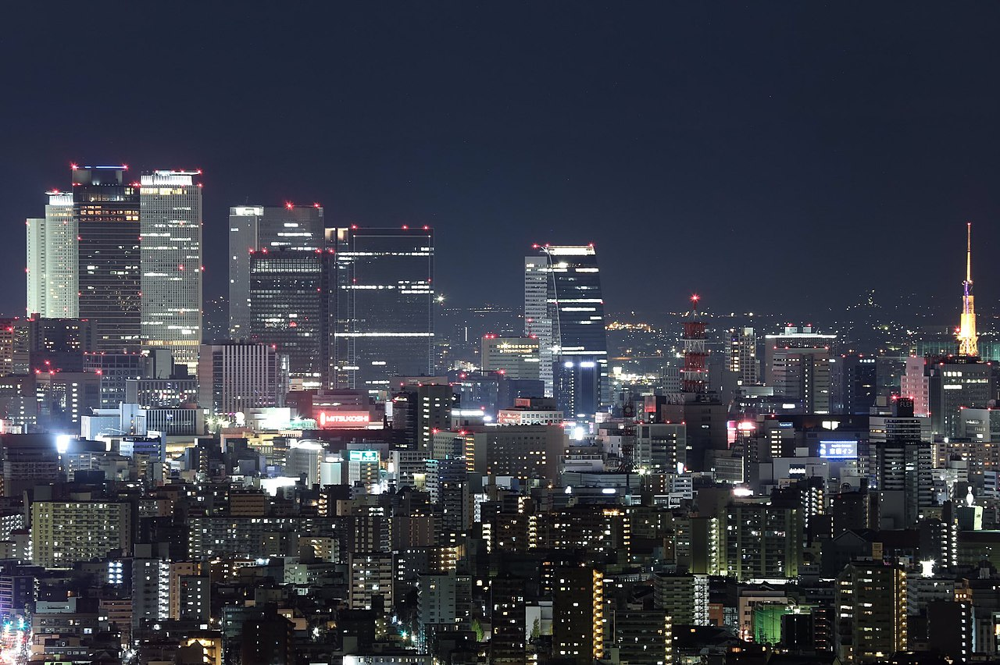
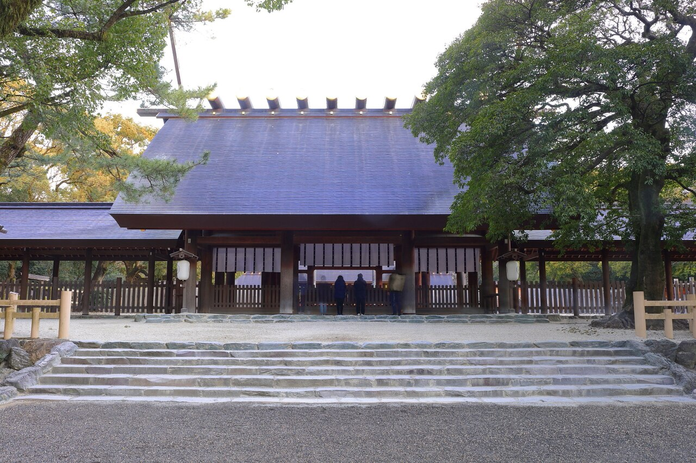
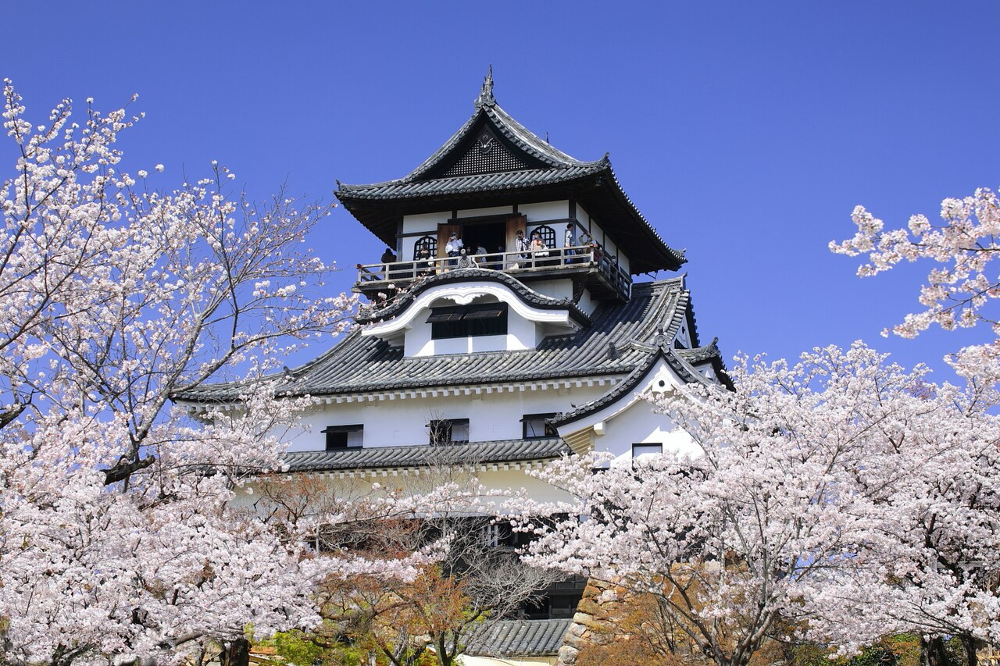
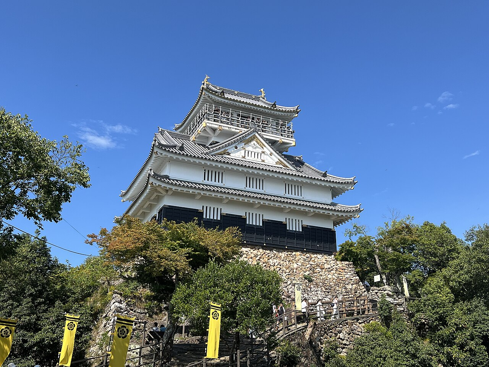
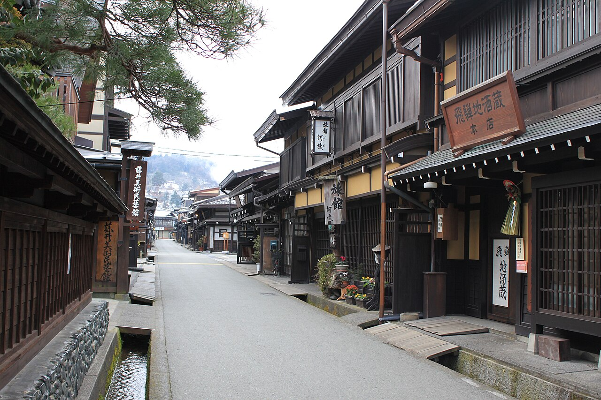

Located at the Taiko-dori exit of Nagoya Station — the perfect transport hub. All daily outings depart from and return to here.
| Time | Day 1 | Day 2 | Day 3 | Day 4 | Day 5 |
|---|---|---|---|---|---|
| Morning | 06:00–09:00 Arrive at airport, collect reserved tickets, head to hotel near Nagoya Station to drop off luggage 09:30–13:00 Atsuta Shrine |
08:00–09:00 Breakfast near Nagoya Station 09:40–13:00 Inuyama Castle & Castle Town |
08:00–09:00 Breakfast near Nagoya Station 09:40–12:30 Mt. Kinka Ropeway / Gifu Castle / Squirrel Village |
07:43–10:16 Ltd. Exp. Hida 1 10:30–13:00 Takayama Old Town |
08:00–09:00 Check out, store luggage 10:30–12:30 Traditional Tea Ceremony (reserved 10:30) |
| Afternoon | 13:30–18:00 Osu Kannon & Osu Shopping Street |
13:40–18:00 Meiji Mura |
12:30–14:00 Kawara-machi Old Town lunch 15:00–17:30 Noritake Garden |
13:00–14:00 Takayama lunch 14:10–16:00 Hida Folk Village |
14:00–16:00 Free time / final shopping near Nagoya Station |
| Evening | 18:20–21:00 Sakae Underground (Central Park) |
19:00–21:00 Dinner near Nagoya Station (backup: Esca Underground) |
17:30–21:00 AEON Mall Nagoya Noritake Garden |
16:33–19:06 Ltd. Exp. Hida 18 19:15–21:00 Esca Underground dinner |
16:30–17:30 Head to airport 17:30–20:00 Flight of Dreams at airport, departure |

After arriving at Chubu Centrair International Airport, please collect your reserved train tickets at the airport first. Then take the Meitetsu Limited Express to Nagoya Station (approx. 35–40 min) and drop off your luggage at the hotel.


Nagoya to Gifu is extremely convenient — JR Rapid or Meitetsu Limited Express takes just 20–30 min. Upon arriving at Gifu Station, transfer to a city bus toward Gifu Park.
Closed every Monday (moved to Tuesday if that falls on a public holiday); shops and museum inside usually open until 18:00, Craft Center admission until 16:30.

Today we take the JR Limited Express Hida to Takayama City — it's a long journey, so buy breakfast near Nagoya Station early and enjoy it on the train.
Check out at the hotel in the morning and leave luggage at the storage counter; collect it in the evening before heading to the airport.
| Item | Description | Where to Buy |
|---|---|---|
| Frog Manjū Aoyagi Sōhonke | Cute frog-shaped red bean buns — loved by kids and adults alike. | Nagoya Station Grand Kiosk, Meitetsu Dept. Store B1, Airport |
| Uiro Cake (ういろう) Aoyagi Sōhonke | Nagoya's signature traditional sweet — chewy mochi-like texture similar to yokan, available in many flavors. | Osu Honten, Nagoya Station souvenir area, dept. stores, Airport |
| Shrimp Senbei "Yukari" Bankaku Sōhonpo | Made with loads of fresh shrimp — rich aroma and crispy texture. | Nagoya Station Grand Kiosk, JR Takashimaya, Airport |
| Shrimp Crackers Katsushindō | Whole baked shrimp and variety of shrimp crackers, elegantly packaged. | Meitetsu Dept. Store B1, Matsuzakaya, Nagoya Station, Airport |
| Ogura Toast Sandwich Biscuits Tōkaishu | The iconic ogura red bean toast experience translated into a crispy sandwich biscuit — highly faithful and bestselling. | Nagoya Station Kiosks, Airport |
| Uiro Ice Bar (ウイロバー) Osu Uiro | Traditional uiro cake reimagined as a stylish ice cream bar — cute packaging, great for gifts. | Osu Honten, Nagoya Station Kiosk, Airport |
| Chiginari (千なり) Futakuchiya Kiyokiyo | Dorayaki stamped with Toyotomi Hideyoshi's banner crest, featuring premium red bean paste — ideal for elders. | Meitetsu Dept. Store, Takashimaya, Mitsukoshi/Matsuzakaya, Nagoya Station |
| Accordion Pie Bizenya | Crispy Japanese-Western fusion pastry with red bean filling, an Okazaki, Aichi specialty. | Nagoya Station Grand Kiosk, Airport |
| Jagarico Tebasaki Flavor Calbee | Inspired by Nagoya chicken wings — irresistible pepper aroma, a hugely popular snack. | Nagoya Station, supermarkets, Don Quijote, Airport |
| Sugakiya Tonkotsu Ramen Pack Sugakiya | Local soul food at an affordable price — bring home the proprietary tonkotsu broth to recreate it yourself. | Chain supermarkets (AEON), Don Quijote, Airport duty-free |
| Shiruko Sand Red Bean Biscuits (しるこサンド) Matsunaga Seika | An Aichi childhood classic — crispy biscuits filled with mildly sweet red bean paste, pocket-friendly and moreish. | Supermarkets, convenience stores, 100-yen shops, Airport |
| Nagoya French Dacquoise | French dacquoise meets Japanese mochi — crispy outside, soft inside, a modern Japanese-Western confection. | Nagoya Station, highway rest stops, Airport |
| Moriguchi Zuke Yamatoya Moriguchi-zuke Sōhonke | The world's longest radish ("Moriguchi Daikon") long-pickled in sake lees and mirin — a favorite among older generations. | Meitetsu Dept. Store Underground, Sakae Underground, Nagoya Station |
| Hatcho Miso Powder/Paste Kakukyū | Aichi's signature seasoning — recreate authentic miso katsu or miso soup at home. | Supermarkets (AEON), Nagoya Station, Airport |
| Piyorin Chick Pudding Cake (ぴよりん) JR Tōkai | "The hardest souvenir to bring home" — refrigeration required and easily deformed, but adorably cute with an exquisite, rich pudding filling. | Nagoya Station "Piyorin Shop" / Café gentiane |
| Café | Location | Highlight |
|---|---|---|
| Komeda Coffee Honten | Shōwa Ward (near Irinaka Station) | The birthplace of Nagoya's most iconic kissaten chain — the "morning set" (free toast with any drink) is a must. |
| Kompal Osu Honten | Chūku Osu Shopping Street | Legendary kissaten, famous for its generously stuffed fried shrimp sandwich. |
| BUCYO Coffee KAKO | Nakamura Ward (10–15 min walk from Nagoya Station) | A popular queue spot — homemade ogura red bean paste with fresh cream on toast is pure soul food. |
| Coffee House Kako Hanaguruma Honten | Nakamura Ward / near Kokusai Center Station | The city's first self-roasting coffee shop — jam with ogura toast and stained-glass windows, wonderfully retro. |
| Yōgashi Kissaten Bonbon | Higashi Ward (near Takaoka Station) | Shōwa retro romantic Western cake café — affordable and delicious. |
| Kissaten Tsuzuki | Nakamura Ward (near Taikōdōri Station) | Famous for its "ceiling pour" latte art performance (tenjo-otoshi) — a must-see spectacle. |
| Kissaten New Poppy | Nishi Ward (inside Shikenmai Old Street) | Self-roasted coffee hidden in a century-old traditional house — the iron-plate ogura toast is a must-order. |
| Kōhī-dokoro Karasu | Chūku (near Fushimi Station) | A pure kissaten loved by locals — dark woodwork and thick-cut ogura toast full of Shōwa atmosphere. |
| Nagagutsu to Neko | Chūku (Sakae Underground / area) | Inspired by Kenji Miyazawa's fairy tales — whimsically cute interior with cat ornaments everywhere. |
| HARBS Sakae Honten | Chūku (near Sakae TV Tower) | The renowned fresh fruit mille-feuille shop that originated in Nagoya — generous portions at the flagship. |
| Shiyachiru | Chikusa Ward (near Imaike Station) | "Neo kissaten" blending trendy and retro — its firm-set pudding is a hit on Instagram. |
| Vingt-Neuf Deux | Chūku (Sakae area) | An atmospheric hidden basement café — the freshly baked apple pie is outrageously good. |
| Piyorin STATION Café gentiane | Nakamura Ward (inside Nagoya Station) | Always a long queue for the adorable Piyorin chick pudding cake. |
| KAKO Yanagibashi | Nakamura Ward (near Nagoya Station / Ekawa Line) | Sister shop of Hanaguruma Honten — same delicious homemade jam and ogura toast, shorter queues. |
| Hoshino Coffee Nagoya Sakae | Chūku (Sakae area) | A chain, but the signature kiln-baked soufflé pancakes and pour-over coffee are excellent — a great rest stop after shopping. |